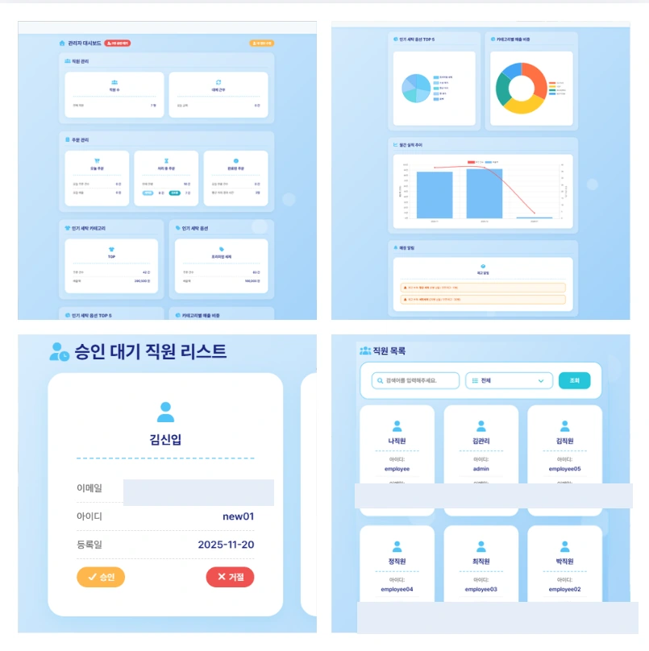
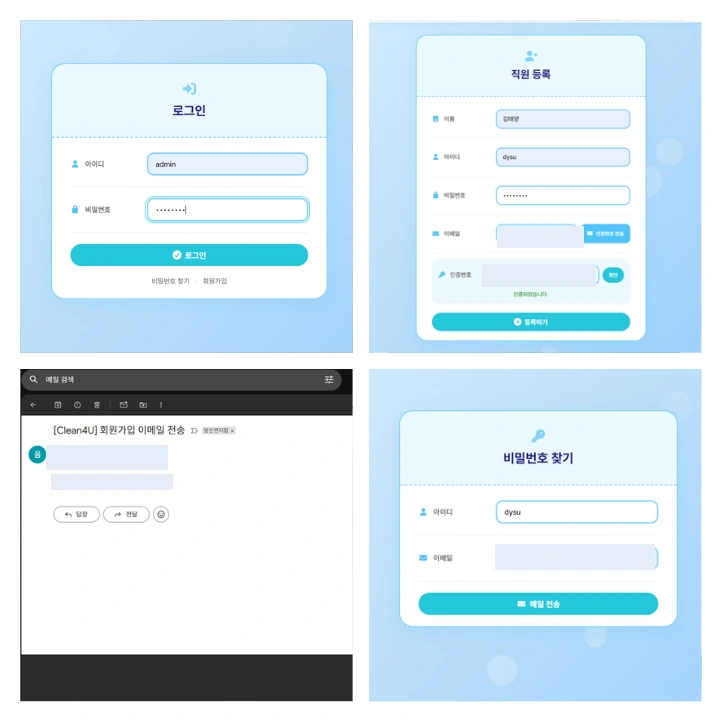
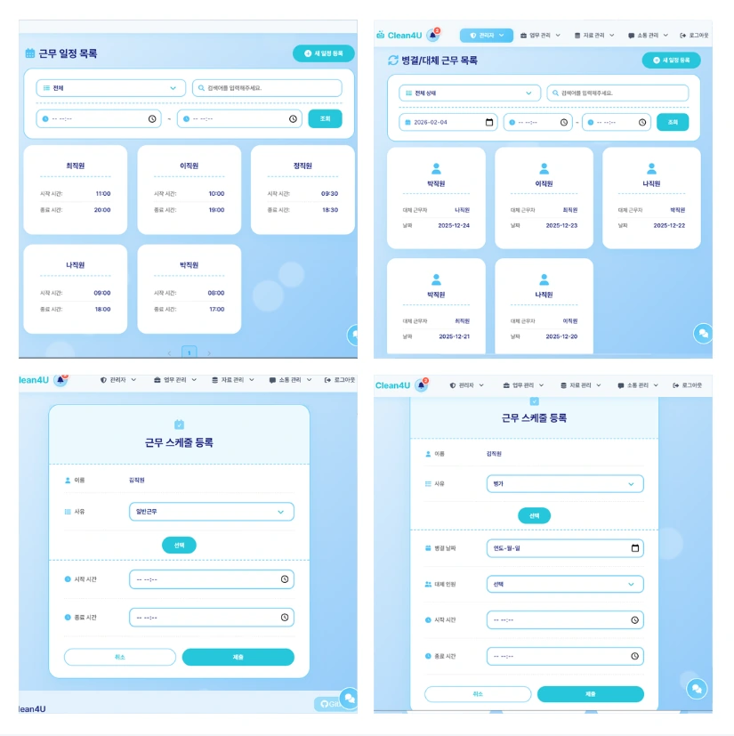

PROBLEM
흩어진 기록과 반복 업무
고객 정보, 주문 접수, 직원 일정, 재고가 전화·수기·엑셀 등으로 나뉘면 처리 상태 공유와 일정 조율이 어려워질 수 있습니다.
접수 누락스케줄 충돌처리 상태 혼선
고객·주문·세탁물·직원·근무 일정·재고를 한곳에서 관리하도록 만든 팀 웹 프로젝트입니다. 저는 로그인·이메일 인증, 직원 승인과 관리, 근무 스케줄 등 관리자가 실제로 사용하는 백엔드 기능을 맡았습니다.

기존 Notion에 보관했던 Clean4U 팀 프로젝트 화면을 가져왔습니다. 설명용 그림이 아닌 실제 프로젝트 캡처이며, 각 이미지를 누르면 크게 볼 수 있습니다.


기존 Notion의 실제 화면을 기반으로 하며 개인 이메일과 일부 계정 정보는 가렸습니다. 이 이미지는 작동하는 서비스 시연이 아닌 구현 당시의 화면 기록입니다.
세탁소에서 여러 업무를 따로 관리할 때 생기는 누락과 혼선을 줄이려는 프로젝트였습니다.
고객 정보, 주문 접수, 직원 일정, 재고가 전화·수기·엑셀 등으로 나뉘면 처리 상태 공유와 일정 조율이 어려워질 수 있습니다.
팀 전체는 고객·주문·세탁물·재고·직원·근무 일정 기능을 통합했습니다. 이 페이지는 그중 제가 담당한 인증과 운영 관리 기능을 중심으로 설명합니다.
팀 전체 프로젝트와 개인 담당 범위를 구분했습니다. 기능 설명은 기존 Notion 기록과 공개 소스 코드를 바탕으로 정리했습니다.
세션 기반 로그인과 회원가입, Google SMTP 이메일 인증, 비밀번호 재설정 흐름을 구현했습니다.
관리자가 신규 직원의 가입을 승인하고, 직원 상태와 정보를 확인하는 기능을 개발했습니다.
근무 일정을 등록·수정·조회하고 병가·대체 근무와 같은 예외 일정을 관리하는 기능을 개발했습니다.
관리자가 운영 현황을 파악할 수 있도록 직원·주문·매출 관련 통계를 시각화하는 기능을 맡았습니다.
실제 코드에 나타난 승인 상태 검사와 세션 인증 흐름을 중심으로 단순화한 구조도입니다.
이 흐름은 기능을 이해하기 위한 요약이며, 실제 모든 요청이 하나의 직선 절차를 반드시 거치는 것은 아닙니다.
근거: 공개 소스의 직원 서비스, 인증 서비스, 예외 처리 모듈.
설명용으로 만든 화면뿐 아니라 팀이 실제로 사용한 설계 자료도 함께 볼 수 있게 했습니다. 원본 Notion은 그대로 유지했습니다.
원본 구현 화면 3개를 위의 기능별 화면 갤러리에 반영했습니다. 추가한 이미지는 실제 스크린샷이며 개인정보 일부를 가렸습니다.
기술명은 실제 프로젝트에 포함된 구성만 기록했습니다. 별도 운영 배포나 수치 성과를 확인하지 않은 항목은 주장하지 않았습니다.
계정이 존재하는지와 실제로 승인된 계정인지 구분하는 검사가 중요했습니다.
일반·대체 근무, 검색 조건, 중복 여부처럼 실제 운영에 필요한 분기를 생각했습니다.
주문·세탁물·재고를 포함한 전체 시스템은 팀 결과물이고, 이 페이지는 제 담당 기능의 근거를 설명합니다.
기존 Notion에는 원래 프로젝트 설명, 화면 자료, ERD와 발표 문서가 보관되어 있습니다. 접근 권한에 따라 Notion 로그인이 필요할 수 있습니다.
기존 자기소개서와 통합 포트폴리오에서도 이 프로젝트를 확인할 수 있도록 연결했습니다.